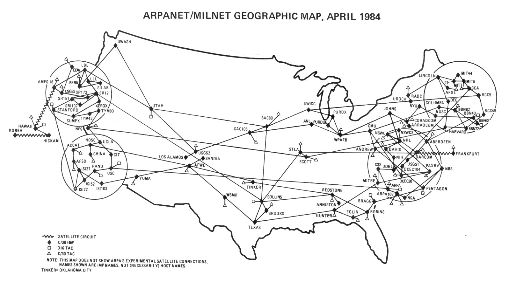

The Internet Search
When we stream a YouTube video, our computer will send a message to the YouTube’s computer to give access to the file. Even though the streaming starts instantly, there’s a lot of process behind it. The message reaches the computer, which in turn searches for the required file of 1s and 0s. YouTube sends this file back to the local computer in pieces or packets with the ones and zeros regarded as the beginning of the video, and the ones and zeros continue to stream in even while we watch the video. It makes us wonder how we came up in a world where billions of machines are all connected by this bizarre framework, we call the Internet.
In 1960, there was no Internet, but a team led by Richard Feynman discovered a way to solve complex problems in parallel. In 1969, the US Department of Defence established the Advanced Research Projects Agency, or ARPA. Packet switching was one of ARPAnet’s first significant innovations. It allowed engineers to solve issues that continue to influence everything we do online today. The first program to bring this change was called World Wide Web created by Sir Tim Berners-Lee at CERN and released on Christmas Day, 1998. Within a year another browser, WWW had been released for Unix. A good candidate for popularizing the Internet would have to be marked. The recent one who wrote the mosaic was the first popular web browser for Windows.
